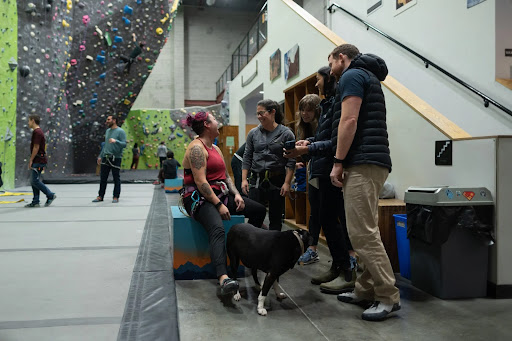
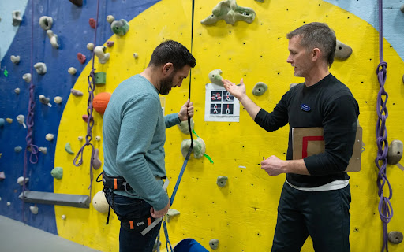
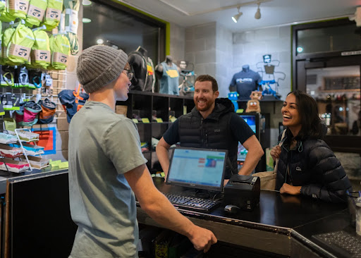

Inclusive by design
Every route, program, and welcome should make room for another kind of climber.
Founded with a conviction that indoor climbing should be inclusive, challenging, and deeply welcoming. Source is Southwest Washington’s gathering place for first-timers, seasoned crushers, and everyone in between.

Community hall & gathering area · Main StreetBefore Source opened its doors on Main Street, Clark County climbers had to cross the Interstate Bridge for an evening session. We believed Southwest Washington deserved its own home for climbing—a place authentic enough for seasoned climbers and encouraging enough for a kid tying their first knot.
Today, Source is more than climbing walls. It is a downtown hub where neighbors meet, high school teams train alongside masters athletes, and outdoor friendships take root.
Every route, program, and welcome should make room for another kind of climber.
Confidence comes from understanding the tools, the risks, and the choices you can make.
Thoughtful movement and fresh challenges keep the wall interesting for every level.
We invest in the people, neighborhoods, and outdoor places that make climbing possible.
Our staff bring technical knowledge, patience, and a genuine love of helping people climb.

Helping first visits feel clear, supported, and fun.

Your resource for check-in, rentals, questions, and a friendly hello.
Creating the clinics, leagues, and gatherings that bring us together.
Everything you need to learn, train, and stay awhile.
Top-rope and lead terrain for learning and progression.
Fresh movement, low walls, and terrain for every project.
A dedicated space to warm up, strengthen, and reset.
Gear, coffee, conversation, and a place to plan the next climb.
We support the people and places that make Southwest Washington a great place to live, climb, and explore.
First-time visitors receive a free facility orientation. We’ll show you around and help you find your way onto the wall.